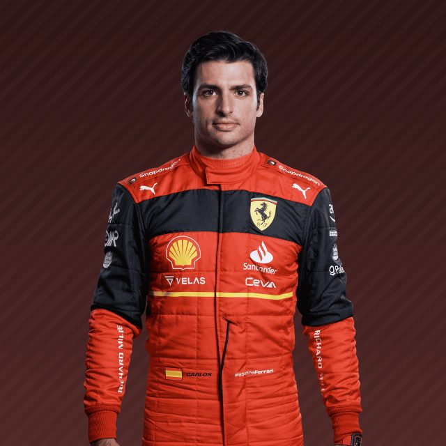

Carlos Sainz Jr is a Spanish racing driver currently competing in Formula One for Scuderia Ferrari. He is the son of Carlos Sainz Sr., a double World Rally Champion.
Sainz started the season strong. He qualified third for the season-opening Bahrain Grand Prix. He ran in third place until Max Verstappen's retirement, allowing Sainz into second place behind Leclerc to claim a Ferrari 1–2 finish and an early lead in the Constructors' Championship. Things went downhill from here. In the Australian Grand Prix, starting 9th, with a rookie mistake overtake that ended his race early. Allow Redbull to catch up the score. He take his first pole and win in Silverstone at the British Grand Prix. But his mental compacity as a leading driver is constantly put in questions.
